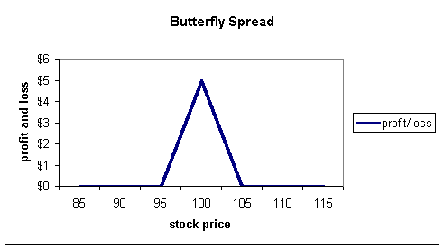
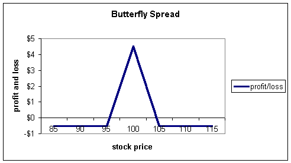
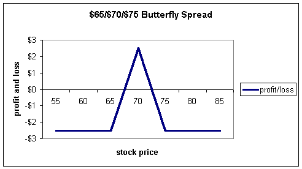
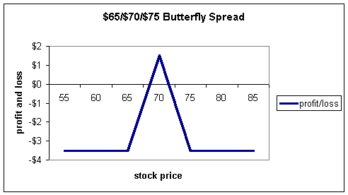

As you become more involved in trading options, you will no doubt hear about a strategy known as the "butterfly spread."
The butterfly spread is one of many strategies that belong to a family collectively known as "wing spreads"; they get this name, as you will soon see, from the shape of their profit and loss diagrams.
The butterfly spread is avidly written about in many options books, so it tends to attract traders who want to venture into new strategies. But because the strategy involves three or four separate commissions (and sometimes more depending on how the spread is constructed) to open and the same number to close, it is very costly and typically not a good strategy for the retail investor.
The butterfly spread is really designed for floor-traders to take advantage of pricing discrepancies between spreads. While it is not an arbitrage play, it stacks the odds in their favor, largely due to the fact they are not paying retail commissions.
A basic butterfly spread involves three strike prices, which we shall generically call low, medium, and high. For the long butterfly, the trader will buy 1 low strike, sell 2 medium strikes, and buy 1 high strike all with the same expiration dates. The butterfly can be executed with either calls or puts (or a combination). The high and low strikes must be the same distance from the medium option.
A stock is trading at $100, and a trader wants to place a butterfly spread. The trader may buy 1 $95 call, sell 2 $100, calls and buy 1 $105 call. Notice how the high and low strikes are the same distance, in this example $5, from the medium strike. This would be called a $95/$100/$105 butterfly. Sometimes traders will just refer to the "body" of the butterfly and call it simply a $100 butterfly.
The long butterfly spread is always executed in a 1-2-1 pattern -- buy 1, sell 2, buy 1. Of course, you could elect to do multiple spreads in which case your pattern would be 2-4-2 or 3-6-3 or any other combination as long as the middle strike is always double the number of contracts as either the high or low.
If you execute a 2-4-2 pattern, this is considered 2 butterfly spreads; a 3-6-3 is considered to be 3 spreads.
There are many ways to view a butterfly spread. In fact, there are probably an infinite number of ways to construct one although most investors who are faintly familiar with them will tell you there are only two ways (either with calls or puts) and always three strikes. A trader can use calls, puts, combinations of the two, and synthetic versions of each piece of the butterfly to create the same profit and loss diagrams. All ways are equally correct as long as the profit and loss diagrams look the same.
One of the easiest ways to view the long butterfly is as a combination of a long bull spread and a long bear spread. For example, the trader in the above example went long 1 $95 call, short 2 $100 calls, and long 1 $105 call. We can look at that trade in another way as follows:
Long $95 call This is the bull spread
Short $100 call
Short $100 call This is the bear spread
Long $105 call
We see the long bull and long bear spreads consist of exactly the same pieces as the butterfly spread: long 1 $95, short 2 $100, long 1 $105.
If you understand the butterfly spread in this way, it will help to understand why it is so useful to the floor traders.
Let's assume a stock is trading for $101 and we see the following quotes on some call options:
|
Option |
Quote |
|
$95 call |
$10 |
|
$100 call |
$8 |
|
$105 call |
$6 |
We know from basic option pricing that the $95 call should be more than the $100 and the $100 more than the $105, and we see that they are. In addition, the differences in price do not exceed the strikes, so no problems there (if you are unsure about these principles, please see our section under "Basic Option Pricing").
However, after checking these basic relationships, market makers will additionally check spreads and straddles for other possible mispricings.
Here is what they will look for: the $95/$100 bull spread becomes more valuable as the stock rises. In fact, the maximum profit is achieved if the stock price is above $100 at expiration. With the stock at $101, the bull spread, at this point, would be at maximum profit if the options were to expire instantaneously.
Now let's look at the bear spread. The bear spread consists of the short $100 call and the long $105 call. This spread will become more valuable as the stock falls; in fact, the maximum profit here will occur if the stock is below $100 at expiration. The bear spread, unlike the bull spread at this point, will be below maximum profit if the options expire instantaneously.
So if you had to pick a spread to be the winner, which would it be? Obviously, it should be the bull spread because it is theoretically worth more. But look at the quotes again -- we see both spreads are prices at $2.
How? The bull spread consists of the long $95 and short $100 for a net debit of $2. The bear spread consists of the short $100 and long $105 for a net credit of $2.
With the stock at $101, the market maker knows the bull spread should be more valuable relative to the bear spread, so he'll buy the bull spread and sell the bear spread -- a butterfly spread.
Notice that this does not guarantee a profit -- the stock could fall below $95 or rise above $105 -- so is not an arbitrage play. It does, however, allow the market maker to take an unfair advantage of a mispricing and put the odds on his side that the trade will, in fact, be profitable. This is one of many trading situations known as a pseudo-arbitrage because it does not guarantee a profit, but is traded solely from a theoretical mispricing viewpoint; it is an arbitrage on theoretical odds.
The profit and loss diagram for the above butterfly looks like this:
Notice how there is no loss area; the lowest this spread can go, in this example, is zero. This is because it was constructed with the bull and bear spread priced the same, so there was no cash outlay -- the market maker paid $2 for the bull spread and received $2 for the bear spread. Realistically, there may be a slight debit, especially after commissions, so it may actually look like this:
The point is that with a butterfly (assuming a very low debit or low commissions), you have very little loss area but a high profit area albeit over a small range of stock prices. In a lot of ways, it's like playing the lottery. The market makers are thinking they have little to lose but much to gain. The maximum profit will be achieved at the strike price of the short, in this case, $100.
If you use your imagination, the profit and loss diagram looks like the wings of a butterfly (I told you to use your imagination!) -- hence the name butterfly spread.
Another way to view the spread is that it's the combination of a short straddle and long strangle (please see our section on "Straddles and Strangles" for more information on these strategies). If a trader executes a short straddle and long strangle, it is a special variation of the butterfly known as an iron butterfly. The trader of an iron butterfly wants the stock to fall, so the above profit and loss diagram is actually a short iron butterfly or long butterfly. The short straddle is easy to see; it is the part that forms the upside down "V" in the diagram. The long strangle just provides protection from further losses if the stock falls below $95 or rises above $105. It is the long strangle that forms the protective "wings" to the left and right of the diagram. If a butterfly spread is constructed in this manner, there will be four commissions to open and four to close.
If you can ever execute a butterfly for a very low debit, you may want to consider it. If you can ever execute it for a credit, do not pass it up, as this would be an arbitrage situation -- you cannot lose!
Let's look at some real numbers and see why retail investors should think twice before entering a butterfly spread.
MSFT is currently trading for $68-3/4 with the following option quotes available:
Dec $65 call = $6-1/2 ask
Dec $70 call = $3-3/8 bid
Dec $75 call = $1-3/4 ask
Let's trade the $65/$70/$75 butterfly and see what happens:
Long 1 $65 = -$6-1/2
Short 2 $70 = +$6-3/4
Long 1 $75 = -$1-3/4
Net debit $1-1/2
Now, to make it more realistic, let's say you pay a commission of $100 for the three contracts, which may be a conservative number. Now you must add $100 to the cost. Remember that we are dealing with three different strikes, so there will be three separate commissions -- and that's just to buy it.
Now our net debit is $2-1/2 and the maximum we can make is $5. Here's our profit and loss diagram so far:
It already looks much different from the market maker's above. Notice just how much more "loss" area there is in this diagram.
Now, our break-even points are $67-1/2 and $72-1/2. If the stock closes below $67-1/2 or above $72-1/2, the trade will incur losses, and we haven't even considered the commissions to get out.
Already it's a pretty narrow range in order to be profitable -- a five-point range between break-even points. Let's assume the stock closes at exactly $70, which is the point of maximum gain. We make $250 but have to pay another $100 in commissions for a total of $150.
Now, it still may not seem like such a bad deal, after all, $150 bucks is $150 bucks. But this was assuming the stock closed at exactly $70. Just how much room do we have to work?
Taking the sell commissions into account, here's how the trade looks now:
The stock must close above $68-1/2 or below $71-1/2 in order to get anything. In order to get the full $150, we need the stock at exactly $70. If you can call the stock closing prices within this close of a range, you're probably better off selling naked calls, puts, or straddles.
The butterfly spread is an interesting combination strategy, which you will no doubt hear about as you continue with your options trading. Over the past seven years, I have seen many retail investors attempt butterfly spreads and did not see one -- not a single one -- make a dime.
If you decide to try one, you may want to check with your broker regarding commissions and break-even points.
My guess is that you will decide against it.